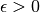
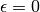

1.3. 核岭回归(KRR)¶
Kernel ridge regression (KRR) [M2012] combines Ridge Regression (linear least squares with l2-norm regularization) with the kernel trick. It thus learns a linear function in the space induced by the respective kernel and the data. For non-linear kernels, this corresponds to a non-linear function in the original space.
The form of the model learned by KernelRidge is identical to support
vector regression (SVR). However, different loss functions are used:
KRR uses squared error loss while support vector regression uses
 -insensitive loss, both combined with l2 regularization. In
contrast to
-insensitive loss, both combined with l2 regularization. In
contrast to SVR, fitting KernelRidge can be done in
closed-form and is typically faster for medium-sized datasets. On the other
hand, the learned model is non-sparse and thus slower than SVR, which learns
a sparse model for , at prediction-time.
The following figure compares KernelRidge and SVR on
an artificial dataset, which consists of a sinusoidal target function and
strong noise added to every fifth datapoint. The learned model of
KernelRidge and SVR is plotted, where both
complexity/regularization and bandwidth of the RBF kernel have been optimized
using grid-search. The learned functions are very similar; however, fitting
KernelRidge is approx. seven times faster than fitting SVR
(both with grid-search). However, prediction of 100000 target values is more
than three times faster with SVR since it has learned a sparse model using only
approx. 1/3 of the 100 training datapoints as support vectors.

The next figure compares the time for fitting and prediction of
KernelRidge and SVR for different sizes of the training set.
Fitting KernelRidge is faster than SVR for medium-sized
training sets (less than 1000 samples); however, for larger training sets
SVR scales better. With regard to prediction time, SVR is
faster than KernelRidge for all sizes of the training set because of
the learned sparse solution. Note that the degree of sparsity and thus the
prediction time depends on the parameters and  of the
of the
SVR;  would correspond to a dense model.

References:
| [M2012] | “Machine Learning: A Probabilistic Perspective” Murphy, K. P. - chapter 14.4.3, pp. 492-493, The MIT Press, 2012 |